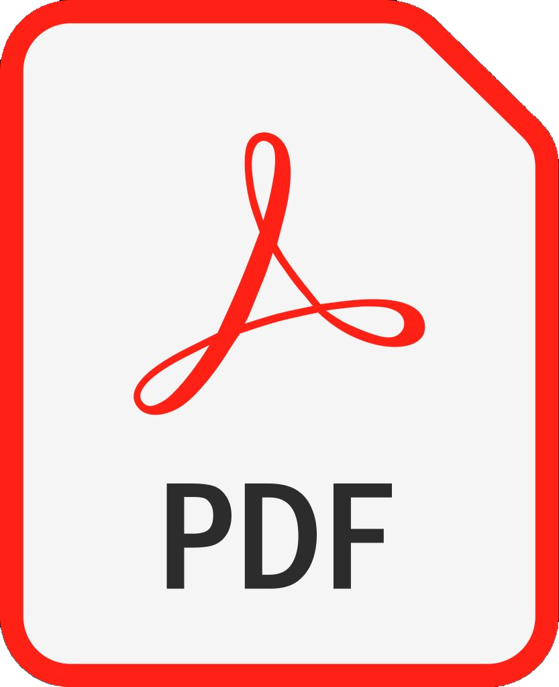

Nuestro proyecto
Nuestro proyecto está directamente dirigido sobre los sectores necesitados de alimento en nuestra ciudad. Por medio de donaciones recibidas gracias a nuestros benefactores y afiliados, nos podemos permitir tanto abastecer nuestros comederos con comida de calidad y capacitación de nuestros cocineros, como también construir nuevos comedores barriales con el fin de que estas personas necesitadas puedan tener sus 4 comidas diarias.
Parte de la consigna para la realización de este proyecto, fue que tengamos en cuenta los objetivos ONU. Nosotros particularmente decidimos elegir el objetivo número dos. Realizamos una serie de explicativos sobre el porqué es importante enfrentarnos a la hambruna en los sectores aledaños a nosotros.
Puedes leerlo en el siguiente documento:
El proyecto surgió a raíz de experiencias propias vividas día a día, es una realidad que la necesidad de alimento para algunas personas es un hecho que observamos a diario. Y nos sentimos muy motivados a mejorar estos aspectos en la vida de estas personas.
| Diseñador interfaz usuario | Del diseño de interfaz del usuario se ocuparon Heredia y Domínguez. |
|---|---|
| Maquetador | Para el Maquetado de la página utilizamos el programa en línea Figma, del cual se ocuparon Cervello y Domínguez. |
| Programador frontends | Acerca del programador frontends principalmente se ocupó Heredia, aunque tanto Domínguez como Cervello aportaron con detalles con el fin de mejorar ciertos aspectos. Siempre es importante contar con más puntos de vista a la hora de realizar este tipo de tareas. |
| Comunicador web | Sobre el comunicador web se ocuparon tanto Cervello cómo Domínguez, para lograr tener una buena estrategia y herramientas de comunicación online. |